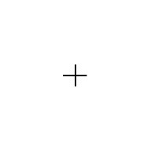

<!DOCTYPE html>
<html>
  <head>
		<title>P300 Experiment</title>
    <script src="jspsych/jspsych.js"></script>
    <script src="jspsych/plugins/jspsych-text.js"></script>
    <script src="jspsych/plugins/jspsych-survey-text.js"></script>
    <link href="jspsych/css/jspsych.css" rel="stylesheet" type="text/css"></link>
    <script src="jspsych/plugins/jspsych-single-stim.js"></script>
    <script src="jspsych/plugins/jspsych-single-audio.js"></script>
	</head>
	<body></body>
  <script>

    // experiment parameters
    var n_trial_per_block = 40;
    var type_order = ['audio', 'visual', 'audio', 'visual'];

    var timeline = [];

    for(var i=0; i<type_order.length; i++){

      if(type_order[i] == 'audio'){

        var instructions = {
          type: "text",
          text: "<p>Welcome to the experiment! There will be both high frequency and low frequency tones played through your headset. " +
          " For this part of the experiment you will be tasked with counting the correct number of high frequency tones you hear.</p>" +
          "<p>The test will begin immediately after you press any key.</p>",
        timing_post_trial: 2000
        };
        timeline.push(instructions);

        var test_stimuli = [
          { stimulus: "audio/2000.wav", data: {test_part: 'test', oddball_type: 'common', block: i}},
          { stimulus: "audio/1000.wav", data: {test_part: 'test', oddball_type: 'rare', block: i}}
        ];

        var test = {
          type: "single-audio",
          stimulus: jsPsych.timelineVariable('stimulus'),
          data: jsPsych.timelineVariable('data'),
          trial_ends_after_audio: true,
          choices: jsPsych.NO_KEYS,
          prompt: '</img>'
        }

        var test_procedure = {
          timeline: [test],
          timeline_variables: test_stimuli,
          randomize_order: true,
          sample: {type:"with-replacement",size: n_trial_per_block,weights:[8,2]}
        };

        timeline.push(test_procedure);


        var survey_trial = {
          type: 'survey-text',
          questions: ["How many times did you hear the high pitched tone? Input your answer and click next to continue to the next part of the experiment."],
          rows: [1],
          columns: [1],
          data: {block: i}
        };

        timeline.push(survey_trial);

        var debrief_block = {
          type: "text",
          text: function() {
            var which_block = jsPsych.data.get().last(1).values()[0].block;
            var common_trials = jsPsych.data.get().filter({oddball_type: 'common', block: which_block}).count();
            var rare_trials = jsPsych.data.get().filter({oddball_type: 'rare', block: which_block}).count();

            return "<p>There was/were "+rare_trials+" high frequency tone/tones.<p>Press any key to complete this part of the experiment and continue to the next</p>";
=======
            return "<p>There were "+rare_trials+" high frequency tones.<p>Press any key to complete this part of the experiment and continue to the next</p>";
>>>>>>> f3735b4935121ec49014130ce11b93b77a4b106d
=======
            return "<p>There were "+rare_trials+" high frequency tones.<p>Press any key to complete this part of the experiment and continue to the next</p>";
>>>>>>> f3735b4935121ec49014130ce11b93b77a4b106d
          }
        }

        timeline.push(debrief_block);

      }

      if(type_order[i] == 'visual'){

        var instructions = {
          type: "text",
          text: "<p>In this experiment, either a red or blue circle with a black plus sign in the center will appear" +
            " on the screen.</p><p>Your task is to count how many of the circles are the color red.</p>" +
            "<p>Press any key to continue and immediately start the test.</p>" +
            "<div style='float: left;'></img></div>" +
            "<div style='float: right;'></img></div>",
          timing_post_trial: 2000
        };
        timeline.push(instructions);

        var test_stimuli = [
          { stimulus: "img/Blue.jpg", data: {test_part: 'test', oddball_type: 'common', block: i}},
          { stimulus: "img/Red.jpg", data: {test_part: 'test', oddball_type: 'rare', block: i}}
        ];

        var fixation = {
          type: 'single-stim',
          stimulus: "img/Fixation.jpg",
          timing_response: 133,
          data: {test_part: 'fixation'}
        }

        var test = {
          type: "single-stim",
          stimulus: jsPsych.timelineVariable( 'stimulus'),
          data: jsPsych.timelineVariable('data'),
          timing_response: 83
        }

        var test_procedure = {
          timeline: [fixation, test],
          timeline_variables: test_stimuli,
          randomize_order: true,
          sample: {type:"with-replacement",size: n_trial_per_block,weights:[8,2]}
        };

        timeline.push(test_procedure);


        var survey_trial = {
          type: 'survey-text',
<<<<<<< HEAD
<<<<<<< HEAD
          questions: ["How many red circles was/were there?"],
=======
          questions: ["How many red circles were there? Input your answer and click next to continue to the next part of the experiment."],
>>>>>>> f3735b4935121ec49014130ce11b93b77a4b106d
=======
          questions: ["How many red circles were there? Input your answer and click next to continue to the next part of the experiment."],
>>>>>>> f3735b4935121ec49014130ce11b93b77a4b106d
          rows: [1],
          columns: [1],
          data: {block: i}
        };

        timeline.push(survey_trial);

        var debrief_block = {
          type: "text",
          text: function() {
          var which_block = jsPsych.data.get().last(1).values()[0].block;
          var common_trials = jsPsych.data.get().filter({oddball_type: 'common', block: which_block}).count();
          var rare_trials = jsPsych.data.get().filter({oddball_type: 'rare', block: which_block}).count();

<<<<<<< HEAD
<<<<<<< HEAD
          return "<p>There was/were "+rare_trials+" red circle/circles.</p>This portion of the test is now complete. Please proceed to the next part by pressing any key.</p>";
=======
          return "<p>There were "+rare_trials+" red circles.</p><p>Press any key to complete this part of the experiment and continue to the next.</p>";
>>>>>>> f3735b4935121ec49014130ce11b93b77a4b106d
=======
          return "<p>There were "+rare_trials+" red circles.</p><p>Press any key to complete this part of the experiment and continue to the next.</p>";
>>>>>>> f3735b4935121ec49014130ce11b93b77a4b106d
          }
        }

        timeline.push(debrief_block);
      }
    }
    var instruction_change = {
      type: "text",
      text: "<p>Please remain seated as the experimenter rearranges the technology for the proceeding part of the experiment." +
        " Thank you.</p><p>",
      timing_post_trial: 2000
      }

    timeline.push(instruction_change);

    jsPsych.init({
      timeline: timeline,
      preload_images: ['img/Blue.jpg','img/Red.jpg','img/Fixation.jpg'],
      preload_audio: ['audio/2000.wav', 'audio/1000.wav'],
      on_finish: function() {
        jsPsych.data.get().localSave('csv', 'experiment-data.csv');
      }
    });
  </script>
</html>
